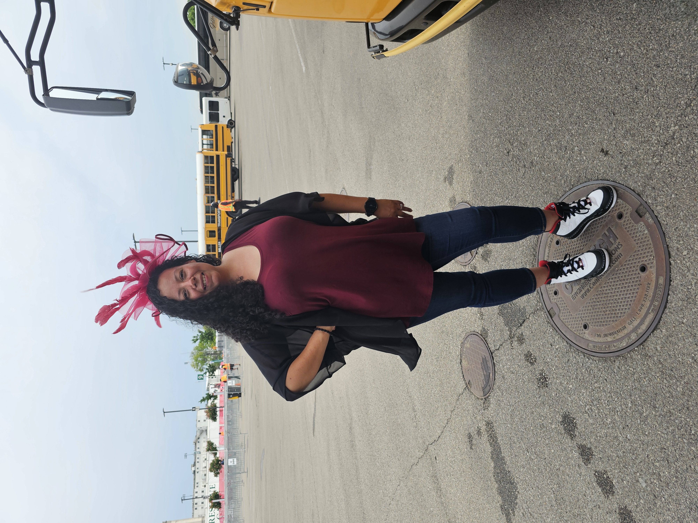
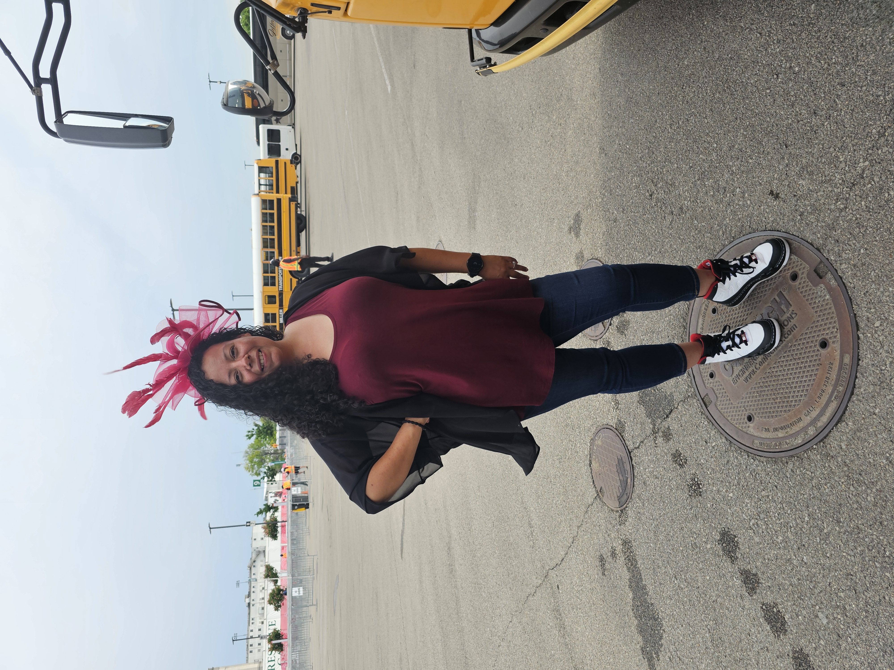

Zulisa Rodriguez
Bachelor in Information Technology
Spring 2023

Spring 2023

| Week 1 | ||
|---|---|---|
| Research Web Development as a Career | Create a GitHub Account | Week 2 |
| Storing file/folders | Curbside Thai: HTML tutorial exploring restaurant menus | Week 3 |
| Build your development rig | Mobile Panini: Created a review page for food trucks | Week 4 |
| Using GitHub to Host My Pages | Jedd’s Tree Service: Developed a business homepage for a tree care company | Week 5 |
| Tri and Succeed Sports: Homepage for a sports event management company | Philip Henslowe Classic Theatre : This midterm project showcases a professional design for the final exam. | Meet the Coaches: Reviewed and designed a coaches’ profiles page. | Week 6 |
| Pandaisia Chocolates: Designed a product showcase for a chocolate company | Add Your Instructor to your GitHub Repository | Week 7 |
| Slate & Pencil: Promotional webpage for an educational tutoring service | A Soldiers Scrapbook: Informational page on historical World War II events | Week 8 |
| Tree and Book: A story-driven informational page about the Komatsu family | Save Your Fork: A recipe page showcasing a delicious dessert | Week 9 |
| Trusted Friends Daycare: Designed a welcoming homepage for a daycare service with information on programs and contact details | Golden Pulps: Created a cover page for a fictional publishing company specializing in nostalgic literature and comics | Dakota Listeners Radio: Developed a radio program webpage featuring schedules and host profiles for a local station. | Week 10 |
| Marlin Internet: Built a pricing and services page for an internet provider targeting small businesses | Red Ball PizzaDesigned a customer survey form to gather feedback for a pizza restaurant chain | Week 11 |
| Final Exam | Final Exam |
Check out my GitHub repository:
Visit my GitHub